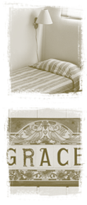

|

|

NDFW is a residential treatment
center. We provide a safe haven for women seeking help
with their addictions, where residents can feel at home
and at ease.
In the more-than two decades
since we opened our doors, NDFW has expanded from a 15-bed
to a 30-bed highly structured residential facility. Located
in Costa Mesa, near Newport Beach's Back Bay and the Nature
Preserve, NDFW's facilities include the primary residential
center Founders' House, where the women prepare and eat
their meals, attend counseling sessions, participate in
a number of therapeutic activities, and reside (three
women to each bedroom). Founders' House is also the location
for our medical and assessment facilities.
Women who successfully complete their primary 30-day
treatment may then move into one of our two residential
cottages: Phister and Courage. Each residential cottage
includes two bedrooms (two beds per room), a full kitchen,
as well as dining and living areas. All of our residential
areas have been recently refurbished and repainted, and
provide private, welcoming environments for women undergoing
their recovery.
In addition to our residential areas, administrative
staff and functions are located in our Faith House, while
support groups and meetings take place in Grace House
and our newly acquired Elliot House. We invite potential
residents and supporters alike to schedule an appointment
with one of our staff members for a tour of our residential
facilities.
|
 |
|
|
 |
|